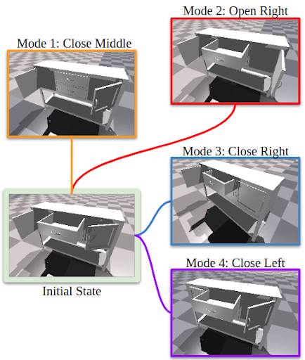
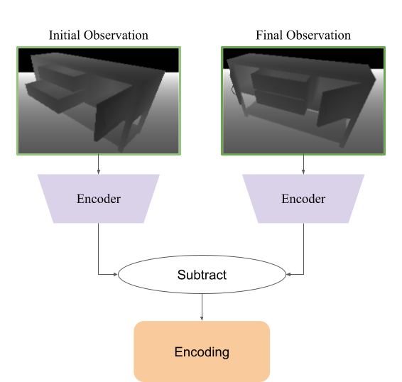
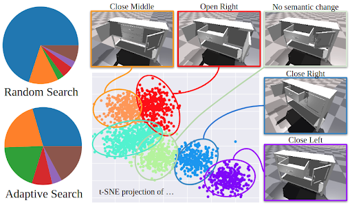

When humans perform a task with an articulated object, they interact with the object only in a handful of ways, while the space of all possible interactions is nearly endless. This is because humans have prior knowledge about what interactions are likely to be successful, i.e., to open a new door we first try the handle. While learning such priors without supervision is easy for humans, it is notoriously hard for machines. In this work, we tackle unsupervised learning of priors of useful interactions with articulated objects, that we call interaction modes. In contrast to the prior art, we use no supervision or privileged information; we only assume access to the depth sensor in the simulator to learn the interaction modes. More precisely, we define a successful interaction as the one changing the visual environment substantially, and learn a generative model of such interactions, that can be conditioned on the desired goal state of the object. In our experiments, we show that our model covers most of the human interaction modes, outperforms existing state-of-the-art methods for affordance learning, and can generalize to objects never seen during training. Additionally, we show promising results in the goal-conditional setup, where our model can be quickly fine-tuned to perform a given task. We show in the experiments that such affordance learning predicts interaction which covers most modes of interaction for the querying articulated object and can be fine-tuned to a goal-conditional model.
Humans are capable of performing several different meaningful tasks with articulated objects such as opening or closing a drawer or turning a switch on or off. This is because humans have prior knowledge about what interactions are likely to be successful. Such prior knowledge is notoriously hard to learn for machines without supervision.
Our ICRA'2023 paper, Self-Supervised Learning of Action Affordances as Interaction Modes (ActAIM) tackles this problem by using unsupervised learning of priors of useful interactions with articulated objects that we call interaction modes.
Contributions:
Given an image of an unseen articulated object, how can we determine the ways in which an agent can meaningfully interact with it?
To answer this, we introduce the notion of an Interaction Mode. For a given object, an interaction mode describes a distinct way in which the object can be meaningfully manipulated. For instance, a storage cabinet which has 2 drawers and 2 cabinet doors, each of which can be opened or closed, gives a total of 8 distinct interaction modes.
We can now restate our original question as
We propose a novel model architecture that learns to predict interaction modes of articulated objects and can generate actions that lead to a given interaction mode. Without the use of any privileged ground-truth information or explicit supervision, our model learns distinct interaction modes that can generalize to new unseen objects.
Our model can be separated into two main modules:
This can be understood as the following decomposition: $$\mathbb{P}(a|o) = \underbrace{\mathbb{P}(a|o,z)}_{\text{action predictor}}~ \underbrace{\mathbb{P}(z|o)}_{\text{mode selector}}$$ Where $o$ is the observation, $z$ is an interaction mode and $a$ is the predicted action.
In order to train the model, we first need to collect a large number of interactions. Naively, this can be achieved by randomly sampling actions, executing these actions, and saving the subsequent interactions. The problem with this approach is that some modes of interaction are much more likely to occur than others. For example, an interaction that opens a door is much less likely than an interaction that closes a door. This is because opening a door requires the agent to grasp a handle (which is typically quite small) and pull. Meanwhile, closing a door can be achieved by pushing on almost any point on the door. Therefore, collecting interactions through random actions will lead to an imbalance of interaction modes in the dataset.
To solve this, we introduce our novel Adaptive Data Collection algorithm.
Given an object to collect interactions from, we begin by sampling interactions from random actions. Once a reasonable number of interactions have been sampled, we encode each interaction in the following way:
We can then cluster the interactions using a Gaussian Mixture Model. The resulting clusters correspond to the distinct interaction modes encountered during the previous stage of data collection, and from these Gaussian clusters, we can sample new actions that correspond to specific interaction modes. Data collection then continues by sampling interactions both from these clusters as well as from random actions.
This data collection process is repeated for many different objects across many different object categories in order to generate a diverse dataset of interactions on articulated objects.
The model architecture can be split into 3 parts.
We model the mode selector $\mathbb{P}(z|o)$ with a Conditional Variational Autoencoder (CVAE). We train this CVAE structure together with the further model and optimize it with the regularization loss and reconstruction loss.
We use an implicit neural geometry encoder that encodes local geometry features to improve the generalizability of the model over different categories of articulated objects. Such implicit representation is a continuous function with a neural network as the input. We extract the point-specific feature $v_p$ given the querying point $p$.
To simplify the problem, we define the action primitives which are interaction point, gripper rotation, and gripper moving direction. Therefore, we can re-define the action predictor as
$\mathbb{P}(a|z, o)$ contains 3 different models which are Mode-conditional score function $Q(a|o, z)$, Mode-conditional point score function $Q_p(p|o, z)$, and Point-conditional action predictor $\pi_p (R, F|p, o, z)$.
We treat $Q(a|v_p, z)$ as a scoring function which estimates the probability of successfully realizing the interaction mode $z$ when taking action given the local geometry feature $v_p$.
$Q_p (p|v_p, z)$ estimates the likelihood that interacting with the point $p$ will lead to the interaction mode $z$ given the local geometry feature $v_p$. During inference, this module is used to select the interaction point with the highest likelihood of success.
Given the interaction point $p$ sampled from the $Q_p(p|v_p, z)$, $\pi_p(R,F|p,o,z)$ predicts the rotation and moving direction for the given interaction mode $z$ together with the local implicit geometry feature.
We use articulated objects from the SAPIEN dataset. We first train our model on objects from nine categories (faucet, table, storage furniture, door, window, refrigerator, box, trashbin, and safe), and then evaluate the model performance on 3 extra categories (kitchen pot, kettle, and switch). For each category, we use 8 object instances with 4 different initial states for training and testing.
To evaluate the multi-modal interaction modes, we use the following metrics to evaluate the prior distribution $P(a|o)$:
We compare our approach to the following baselines: